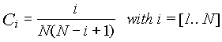
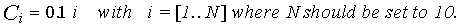
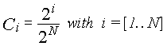
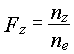

Version 6.02
J.D. Elder
University of Toronto
Institute for Aerospace Studies
4925 Dufferin St.,
Downsview, Ontario
CANADA
M3H 5T6
January 14th, 1999
Introduction to the OUT Reference Manual - OUT input values
OI01 Title
OI02 XY Grid Source
OI03 Column Data for XY plots (0 = off, 1 = on)
OI04 PLRP Source Option (0-standard, 1-ADAS)
OI05 Exponential Factor for test function (0.0 = off)
OI06 Number of smoothing weights (0-100)
OI07 Divertor Volume Limit Zd
OI08 Contour Plot Type (0 = contour, 1 = false colour)
OI09 Contour Level Calculation Method
OI10 Number of Contour Lines
OI11 Set of User-Defined Contour Levels
OI12 Include Zoom Plots for Along Ring Quantities
OI13 Range for Zoom
OI14 R-range for Near X-point plots
OI15 Z-range for Near X-point plots
OI16 Scale Factor
OI17 Z-Value for Plots vs. R
OI18 Experimental DataSet for Specific Plot
List of Plots Available
OP011..OP018 Plots of K contours (11-18)
OP021..OP024 Plots of Temp,Dens,K,Smax along given lines (21-24)
OP031..OP033,OP036 Sectional plots along R for given Z (31-33,36)
OP041 R, Z, B, V etc. against S for a given Ring (41)
OP042 R, Z, B, V etc. against P for a given Ring (42)
OP043,OP044 Electron and Ion Mean Free Paths against S or P (43,44)
OP045..OP049 Edge2D and DIVIMP comparison Plots - Along the field line -(45-49)
OP051 Background Plasma Data - Conduction and Convection Terms (51)
OP052 Electron Power Balance (52)
OP053 Ion Power Balance (53)
OP061 Spol and Z as a function of S (61)
OP065 Neuhauser Retention Criterion plot (65)
OP067 Neuhauser LamFIG and LamFF Retention plots (67)
OP071 Background Plasma Data vs S (71)
OP072 Background Plasma Data vs P (72)
OP073 Background Plasma Data vs S (73)
OP074 Background Plasma Data vs P (74)
OP075..OP077 PIN Data Plots (H+ 75, H0 76, H2 77)
OP078 High Resolution Background Plots against S (78)
OP079 Background Plasma Data vs S (79)
OP081 Wall deposition (81)
OP082,OP083 Target Deposition and Net Erosion (82,83)
OP084 Neutral Launch functions (84)
OP085..OP088 Entries / Exits from Main Plasma (85-88)
OP089 Erosion - AUG Outer Target (89)
OP090 Plot of Particles leaving grid towards wall (90)
OP091..OP093 NIE, Zb.Nbtrue and Zeff (91,92,93)
OP094..OP095 Zeffs plotted along a field line (94,95)
OP096 Leakage Plots (96)
OP097 PIN Momentum Source along the field line (97)
OP098 Core Leakage across target (98)
OP101..OP104 Density Contours (101,102,103,104)
OP105,OP106 Contour Plot of Fz (105,106)
OP107,OP108 Contour Plots of the Fluid Code impurity density results(107,108)
OP109,OP110 Contour of Steady-state Impurity Temperature (109,110)
OP111..OP114 Density S-plots (111,112,113,114)
OP121,OP122 PLRP Contour Plots (121,122)
OP123,OP124 ADAS based PLRP Ratio Contour Plots (123,124)
OP125..OP128,OP135..OP138 PLRP ADAS plots for Hydrogen or Impurity (125-128,135-138)
OP131..OP132 Impurity Ionization Contours (131,132)
OP111..OP114 Power Loss and Absolute Power Contour Plots (141-150)
OP151..OP156 Integrated Line Radiation Contour Plots (151-156)
OP139..OP140,OP157..OP160 Bremsstrahlung Contour Plots (139-140,157-160)
OP161..OP170 Leakage Contribution Contour Plots (161-170)
OP171 Density averaged over K vs Reference. Time dependent (171)
OP172 Total Density, averaged over K, against Reference Line (172)
OP173 Density, averaged over K, against Reference Line for Z > Zd (173)
OP175 Total Impurity Density plotted for a specified grid knot value (IK) (175)
OP176..OP179 Plots of Atomic Physics Data (176-179)
OP181..OP182 Random walks (181,182)
OP188..OP189 Contour Plots - Total Radiated Power - Impurity + H (188,189)
OP191..OP199 Impurity Density and Radiated Power plotted along the Field Lines. (191-199)
OP201,OP206 Density LOS plots (201, 206)
OP208 Hydrogenic Density LOS plots (208)
OP211,OP216 PLRP LOS plots (211, 216)
OP212 ADAS PLRP LOS plots - time dependent (212)
OP217 ADAS PLRP Ratio plots (217)
OP218 Hydrogenic PLRP LOS plots (218)
OP231,OP236 Power Loss LOS plots (231, 236)
OP238 Hydrogenic Power Loss LOS plots (238)
OP241,OP246 Spectroscopic Temperature LOS plots (241, 246)
OP251,OP256 Density Temperature LOS plots (251, 256)
OP261,OP266 Spectroscopic Background Ion Temperature LOS plots (261, 266)
OP271,OP276 Spectroscopic Background Electron Temperature LOS plots (271, 276)
OP281,OP286 Density-weighted K-value LOS plot (281, 286)
OP291,OP296 PIN H-alpha Data (291, 296)
OP297..OP301 Bremsstrahlung Plots (297-301)
OP311,OP313,OP315 DIIID matrix based bolometry plots (311,313,315)
OP331 Generalized LOS plots over specific defined quantities (331)
OP341 Generalized Cross-sections of specific 2D contour plots (341)
OP351,OP353 Reciprocating Probe/Onion Skin Model comparison plots (351,353)
OP391 PIN H-alpha: 3-D LOS Plot (391)
OP401,OP411 Asdex Upgrade LOS plots (401 and 411)
OP421,OP431,OP491 Asdex Upgrade Special LOS plots (421,431,491)
OP501..OP512 Contour Plots of the Background Plasma (501-512)
OP551..OP560 Contour plots of Forces (551-560)
OP575..OP580 Along Ring plots of Forces (575-580)
OP601..OP650 Plots of Various PIN Results (601 to 650)
OP660..OP661 Additional Force Balance Plots Along the field line (660,661)
OP662,OP664 Plots of Lagrange Points (662-Inner and 664-Outer)
OP669,OP670 Contours of net force on impurity charge state (669-670)
OP671,OP674 Contour plots of fluid code results (671-674)
OP699 Thomson Analysis or PIN data??? (SL) (699)
OP701..OP723 Multi-graph Plots - Series 700 - E2D vs. DIV Results (701-723)
OP751..OP763,OP793 Plots of Extracted Dperp and Xperp(E,I) Values (751-763,793)
OP781..OP791 Multiple Radial Plots for Cross-Field Comparisons (FC to DIV) (781-791)
OP801..OP815 Bar Charts describing Core Leakage and Sources
OP901 Plots of Thomson Scattering Data (901)
OP950 Plot of Selected ADAS Atomic Physics Data (950)
OP966 Special Multiple Plots (?) (SL) (966)
OP970 Iteration History Plots (?) (SL) (970)
OP972 2D Contour Plots (?) (SL) (972)
OP974 2D Contour Plots (?) (SL) (974)
OP978 Combo Plot (?) (SL) (978)
OP980 LOS Plots (?) (SL) (980)
OP981 Fancy LOS Plots (?) (SL) (981)
OP990 Thomson Shift Analysis Plot (SL) (990)
OP999 Developmet (?) (SL) (999)
Appendix A: SKELETON DATAFILE for OUT
The OUT input data file contains the specifications for a variety of different plots. Many of the inputs to these simply consist of either the ionisation state to be plotted or the ring number (for plots along a contour line) or both. In addition, the first entries in the file contain some general details and options that may apply to some or all of the plots. The LOS plots and the ADAS based plots both require additional lines of data defining either the line of sight and viewing scope in the case of the LOS plots or the data regarding which section of the ADAS atomic physics package is to be accessed in the case of the ADAS plots. Some plots require both sets on ancillary information and will accordingly be followed by two additional lines of data. Descriptions of the contents of these lines can be found under plot 201 for the LOS cases and under plot 125 for ADAS.
Enter a title line for the OUT case that is being run. This item is not actually used anywhere and is just here for reference perhaps in describing the types of plots that are requested in this particular OUT data file. The title specified for the DIVIMP run is passed over to OUT and used instead of this one as the title of the various plots.
This option tells the OUT program either to calculate the XY indexing grids or to read them in from a file. In the past, this XY grid was used in DIVIMP to facilitate following the neutral impurity particles. However, these XY grids are no longer used for normal operation and running of DIVIMP on grids for which polygon information is available. They are now only used to make the plotting routines easier in OUT, and so the code to calculate these was moved to the OUT program. A value of zero indicates that OUT should calculate the grids and a value of 99 indicates that they should be read from an attached data file. As in DIVIMP, this file is normally attached to FORTRAN unit 13 if the file is in use. This option is usually set to 0. (Note: The XY grid is an evenly spaced rectangular grid that covers the entire plasma region. It is used in some cases to map contour plots for passing to the plotting routines.
This directive instructs OUT to write the plot data for XY plots (as opposed to contour plots) out to a file, rather than generating a plot for it. This is useful when extracting data from multiple cases for inclusion on one plot or for extracting the output data for use in a spreadsheet or if it is necessary to look at the actual numbers because the plot does not effectively display the information.
The calculation of PLRPs (Particular Line Radiation Profiles) used to be performed in DIVIMP. This code was moved to OUT since it seemed more appropriate that it be included as part of the post-processor. This switch selects between using the original DIVIMP code to calculate the PLRPs - which is based on a set of coefficients that are hard-coded in the PLRP module - and the use of alternative code that calculates a limited number of PLRPs by using the ADAS pls files. Currently, the only lines supported by the ADAS option are for Boron. This option does NOT affect the function of the plots that ask for additional ADAS data in order to generate the plots - it ONLY affects options with the PLRP module itself - which controls the information that is placed into the PLRPS array.
This option was used to test some plot options by assigning a decaying exponential to the set of values to be plotted as a function of S. i.e. f(S) = exp( - fact * S). A value of zero turns this off. It is only operational in combination with some of the regular and log plots of impurity density along the field lines.
For use in weighted averages smoothing technique, similar to that of LIM. Smoothing may only apply to a limited selection of graphs.
This specifies a Z extent for the divertor region. All values of Z less than the given value are outside the divertor region for an X-point up configuration. This is used to generate the plot of density versus the reference line for the areas outside the divertor region. (For an X-point down configuration, the region of Z > Zd specifies the area away from the Divertor.)
This option applies to generating contour plots. It generates a false colour plot of bin densities instead of the usual contour plot. This is useful because the resolution of the simulation is no better than the grid underlying it and the false colour plot may suppress misleading trends due to the effects of the underlying XY grid on the contour plot. When plotted in black and white the false colour is implemented by changing half-tone densities and fill patterns. Also, when plotting false colour in black and white, it has been found that the best option for the number of contours/false colour scales is 7.
There are a number of methods available for calculating the levels/values at which the contour lines will be drawn. There are 4 options currently supported.
Contour Level Option 0: Contour Levels are calculated using a Quadratic formula.

Contour Level Option 1: Contours are placed at the 10% levels.

Contour Level Option 2: Contours are logarithmic based on powers of 2.

Contour Level Option 3: User Defined. The contour routine will use the set of contour levels specified in the input file. These values are specified as a list of numbers in the range (0,1]. The description of this entry is found below.
This general entry specifies the number of contour lines or the number of colours to be used on a contour plot. This value must always be specified. This number is the N that is used in the formulae describing the contouring methods that are found above.
This input specifies a set of user-defined contour levels that should be used on the contour plots. The format used to input the values is the standard format for reading a real array into DIVIMP. The entry in the data file consists of a descriptive line that is a character value followed by a line that contains an integer. This integer value line specifies how many contour levels should be read from the input data file. This number and the values read will replace the number specified in the previous entry for the number of contour lines. The numbers should be listed in ascending order and the last entry should be 1.0.
The format of the input is the following:
' ' ' Set of user defined contour levels '
' Number of contour levels [0=none]' 7
0.01
0.05
0.1
0.25
0.5
0.75
1.0
This is a simple switch specifying whether close-up plots near the target will be printed for along the ring plots if they are available for the various plot options.
Zoom Plot Option 0: Off - Do not do close ups of the near-target regions for along rings plots.
Zoom Plot Option 1: On - If close ups of the near target regions are available for an along ring plot then they will be plotted. The value used for the zoom or magnification is specified in the next entry.
This input specifies the range to be plotted on the close-up or zoom plots. It is specified as a fraction of SMAX for the specific ring being plotted. For example, an input value of 0.1 would select plots along the ring over the close-up plotting ranges of [0,0.1 * SMAX ] and [0.9 * SMAX, SMAX]. Similarly an input value of 0.01 would produce near target plots of the regions [0.0,0.01 * SMAX] and [0.99 * SMAX, SMAX]. These close ups are available for many but not all of the along the ring plots.
One of the contour plot options is to select a near X-point region for plotting. The two values for R and Z ranges define the region that will be plotted. The R-range that is shown on the near X-point plots is Rx +/- Rrange = [Rx-Rrange,Rx+Rrange]. This may be modified on a particular grid to maximize the grid area displayed.
One of the contour plot options is to select a near X-point region for plotting. The two values for R and Z ranges define the region that will be plotted. The Z-range that is shown on the near X-point plots is Zx +/- Zrange = [Zx-Zrange,Zx+Zrange]. This may be modified on a particular grid to maximize the grid area displayed.
This defines the scaling factor that is applied to some plots. A value of 1.0 leaves all plots as they would normally be produced. A scale factor of –1.0 sets the scaling factor to the ABSFAC source strength calculated in DIVIMP. A value for the scale factor greater than 0.0 sets the scaling factor to that value and a value for the scale factor less than 0.0 set the scale factor to be ABSFAC/|Scale factor|.
This number is the Z-coordinate used when LOS plots are selected to be plotted vs. the R-coordinate instead of angle. The R-coordinate used for a specific plotting angle is determined by the intersection of that angle with the value of Z specified here.
Some plots have the ability to include experimental datasets in the figure. Most of these routines have an input specifier that indicates which experimental dataset should be included. However, some of the older plots did not have this ability. In order to add this capability for some of these plots - this general input specifies an experimental data set that should be plotted in addition to the calculated data if the feature is available for the plot. Only one dataset can be specified in this manner for these types of plots for any one input file.
There are a wide variety of plotting options available from the OUT package. Many of the plots (e.g. the LOS plots) can be configured to replicate the actual functioning of a specific reactor diagnostic. Others can provide information that can not be obtained from any reactor diagnostic and can lead to a better understanding of what may be occurring within the reactor (e.g. the leakage plots).
In the following numbering system for plots there a few common ideas and a number of exceptions. Here are a few of these. The even numbered contour plots are usually used to specify the near X-point plots, while the odd numbers will give the entire grid. (e.g. 11,12). Even numbered along the ring plots will often request the plot to be made as a function of the poloidal distance P rather than the along the field line distance S. Furthermore, many of the contour plots will accept only the one value of input - this usually is the ionisation state of the species to be plotted - or in some cases - a simple on/off switch. For these types of plots - a value of “99” turns them off. The other type accepts a 0,1 off/on switch where 0 is off and 1 is on. Many of these will have extra plotting information included in the character string describing the plot. This may define the ionisation state or the ring to be plotted.
Overall, the best way to select a plot is to examine an already working plot file and look at the options that are set there and how they are set. Some examples are included in the following document.
* A new feature has been added as a plot input. If the 4th character in the plot specification is an “&” the code will read the block of text from position 24 to 44 and try to extract 4 numbers. These 4 numbers will be used to calculate the visible plotting range for 2D contour plots. This mechanism is useful to obtain close-up contour plots of specific portions of the grid. The four number are interpreted as follows – Xcenter Xcenter Dx Dy. The contour plot will then be produced displaying a range of [Xcenter-Dx:Xcenter+Dx,Ycenter-Dy:Ycenter+Dy].
Various plots are available to show the K contour system in full or in detail near the X point. Plots 11 and 12 plot the polygon grid structure, full scale and near X-point. Plots 13 and 14 overlay the XY grid structure.
$
$ Ref Description Option 0/1'
$ -----------------------------------------------------
' 11 Equilibrium grid, full range ' 0
' 12 Equil grid close up near X pt ' 0
' 13 K contours and rectangular grid ' 0
' 14 K contours and grid near X pt ' 0
The following two plots are the same as 11 and 12 except that they use an older grid superposition routine that does not take advantage of polygon information,
' 15 Equilibrium grid, full range ' 0
' 16 Equil grid close up near X pt ' 0
The following two plots are also the same as 11 and 12 except that in this case the wall segments are numbered on the plot with the values used to identify the wall segments in the code.
' 17 Equilibrium grid, full range - walls labelled' 0
' 18 Equil grid close up near X pt - walls labelled' 0
The two important lines are along the target and the reference line. These options plot background conditions and geometry information along these lines.
' 21 Temp,Dens,K,Smax along Reference Line ' 0
' 22 Temp,Dens,K,Smax along Target ' 0
' 23 Temp,Dens,K,Smax along AUG Target ' 0
Plot 24 is similar to the others though instead of plotting background conditions it plots the heat flux across the targets.
' 24 Heat Fluxes along Target ' 0
The temperatures etc. can be plotted along R for a given Z position. The Z position required is included in the character string in the last 6 locations and is read in with an F7.3 format specifier. Typical examples would be Z = -1.0, 1.0, 1.5. Plot 36 is the same as 31 except that it uses a different internal implementation involving the “CUT” subroutine. Plot 36 would be the recommended choice. Plot 32 is the same plot adapted to the Asdex Upgrade geometry. Plot 33 plots the particle count Zeff and K values along a given line.
' 31 Temp,Dens,K against R for Z = 1.5 ' 0
' 32 Temp,Dens,K vs R for IVP-Z Z = -1.0 ' 0
' 33 Dens,Zeff,K against R for Z = -1.0 ' 0
' 36 Temp,Dens,K against R for Z = -1.0 ' 0
This plots various quantities along the given ring number against the distance along the field line S.
' 41 R,Z,B,V,etc against S for ir = 11 ' 0
This plots various quantities along the given ring number against the poloidal distance along the field line P.
' 42 R,Z,B,V,etc against P for ir = 11 ' 0
This plots the electron and ion collisional mean free path lengths against S for a specified ring. The plot also includes the electron and ion temperature scale lengths and the mean free paths multiplied by 5.0 and 500.0 on the same plot. Plot 43 plots these quantities vs. S and plot 44 will plot them vs. P.
' 43 ELI mean free paths vs. S- ir = 11 ' 0
' 44 ELI mean free paths vs. P- ir = 11 ' 0
These plots include both the EDGE2D and DIVIMP calculated SOL values so that they may be directly compared for each field line. These plots are only useful if DIVIMP has calculated the background plasma while at the same time the EDGE2D plasma has also been read in for reference.
' 45 DIV vs.E2D on S (Te,Ti,Ne) ir = 6 ' 0
' 46 DIVIMP and E2D Ioniz vs.S ir = 11 ' 0
' 47 DIV vs.E2D on S (Te,Ti) ir = 6 ' 0
' 48 DIV vs.E2D on S (Ne) ir = 6 ' 0
' 49 DIVIMP and E2D Vb vs.S ir = 11 ' 0
This graph plots the conduction and convection terms contributing to the calculation of the background plasma in SOL options 12 to 22. The four plots produced are 5NVkT, Convection terms, 1/2mV3, and the sum of the first two all as a function of S along a specific ring.
' 51 Combined power balance ir = 8 ' 0
This is similar to above except that it plots the electron relevant conduction and convection terms that are used when Te and Ti are calculated independently.
' 52 Electron power balance ir = 8 ' 0
This is similar to above except that it plots the ion relevant conduction and convection terms that are used when Te and Ti are calculated independently.
' 53 Ion power balance ir = 8 ' 0
This plots the S poloidal and Z values of the bins on a specific ring as a function of their equivalent S values. The purpose of this plot is to assess the position of the bins in differing co-ordinate systems; this plot is a map between these systems.
' 61 Spol and Z as funct. of S ir = 9 ' 0
This option will plot various values that are useful in calculating the Neuhauser retention criterion for a particular field line. Included is the ratio of Lii to Lti and the Mach number as a function of S.
' 65 Neuhauser Retention A LLRM ir = 8 ' 0
This plots the values of LamFIG and 2.0 * LamFF on the same scale. The intersection of these two gives an indication of the point at which leakage might be expected to occur.
' 67 Neuhauser LamFIG LamFF ir = 8 ' 0
If this graph is selected, plots of the electric field, drift velocity, ion temperature, electron temperature density, etc. are generated for the selected ring. They are plotted as a function of S. Fine scale as well as large scale plots are produced.
' 71 VB,E,100E,TeB,TiB,NB vs S ir = 26 ' 0
If this graph is selected, plots of the electric field, drift velocity, ion temperature, electron temperature density, etc. are generated for the selected ring. They are plotted as a function of S. Fine scale as well as large scale plots are produced.
' 72 VB,E,100E,TeB,TiB,NB vs P ir = 20 ' 0
Identical to plot 71 except only large scale plots are produced.
' 73 Full Scale VB,E ... vs S ir = 8 ' 0
Identical to plot 72 except only large scale plots are produced.
' 74 Full scale VB,E ... vs P ir = 2 ' 0
These plot data passed from a PIN run through DIVIMP to the OUT program. It is plotted as a function of S along a specified ring. It can easily be expanded to produce the plots as a function of the poloidal co-ordinate instead of S. The three quantities plotted here are Hydrogenic Ionization, Hydrogen Neutrals and Molecular Hydrogen densities.
' 75 Pin ionization vs S ir = 8 ' 0
' 76 Pin H Density vs S ir = 12 ' 0
' 77 Pin H2 Density vs S ir = 12 ' 0
If available, this will plot the high resolution background plasma data along the ring for which it was saved in DIVIMP. This is only available with certain SOL options.
' 78 High Resolution data ' 0
Identical to plot 71 except that any close-ups are over a fixed length of 0.5 meters instead of the zoom length specified in the input.
' 79 Full Scale VB,E ... vs S ir = 6 ' 0
A contour plot of wall deposition is available.
' 81 Wall Deposition contour plot ' 0
For these two plots the normal off/on or 0/1 switch is not used. Instead, the integer entered alongside either of these options determines how many points will be used to plot the graph. When the DIVIMP2 program is run, the target area is split up into 500 points for purposes of erosion / deposition, and entering a value of 1 here results in a plot using the full 500 points. Any value greater than 1 results in a combining operation of adjacent points, giving a smoothing effect to the plots. For example, a value of 3 indicates that points are to be grouped into blocks of threes. Typical values used are 5 and 10.
' 82 Target Deposition ' 0
' 83 Net Erosion etc along Target ' 0
A plot of the Fluxes, Yields, Energies etc. along the target plane.
' 84 Flux,Energy,Yield etc along Target ' 0
These four plots are an aid to locating where exactly the neutrals and ions enter the main plasma and where they leave it. The figures given alongside the plots should tie up with the figures printed in the DIVIMP2 output for "number of neutrals entering main plasma" etc.
' 85 Exits orig. ioniz in SOL,Trap ' 0
' 86 Exits orig. ioniz in Main Plasma ' 0
' 87 Neutrals Entering Main ' 0
' 88 Ions Entering Main ' 0
This plots the erosion across the Asdex Upgrade outer target as a function of the distance along the target plate,
' 89 Erosion - AUG outer target ' 0
This takes the particles that are recorded as exiting the grid in the WALLS array and plots the value as a function of the poloidal distance along the wall ring.
' 90 Particles Exiting towards wall ' 0
Contour plots are available of the quantities described in the title.
' 91 NIE contours ' 0
' 92 Zb.Nbtrue contours ' 0
' 93 Z effective contours ' 0
This plots the Zeff values as a function of S or P along a specified field line.
' 94 Zeffs against S for ir = 8 ' 0
' 95 Zeffs against P for ir = 8 ' 0
This plots the contents of the leakage array which was specified as an input to DIVIMP. It records the flux of ions travelling along the SOL to the mid-plane. The particles are recorded only once for each distance they pass.
' 96 Plot of Leakage vs. S for each state ' 0
This is another plot of a PIN background quantity. In this case the array being plotted is PINMP - the PIN momentum source. PIN plots are somewhat scattered and should eventually be consolidated.
' 97 PIN momentum vs S for ir = 8 ' 0
This plot the core leakage as a function of the particles starting positions across the target. This allows the specific areas that contribute to the core leakage to be identified.
' 98 Plot of Core Leakage across target ' 0
The basic output from the program. In general, plots with references greater than 100 are either for "full scale" contour plots (odd references) or "plots near the X point" (even references). Additionally, in some cases they are broken down into the normal steady state results, and results at a series of specified time points. Hence for plots of Density, four options are available :- Ref 101 gives the Steady State density full scale contour plot, Ref 102 gives the Steady State density contour plot near the X point, Ref 103 gives the densities at a series of time points, Ref 104 gives the densities at the time points near the X point.
'101 Contour Integrated density ' 99
'102 Contour Integrated density near X pt ' 99
'103 Contour Time Dependent density ' 99
'104 Contour Time Dependent dens near X pt ' 99
These are contour plots of Fz - the ratio of impurity content to background density - plotted over the whole grid or near the X-point.

'105 Contour Plot of Fz ' 99
'106 Contour Plot of Fz - Near Xpoint ' 99
These plots allow the contours of the impurity densities from a fluid code result that was read when DIVIMP started running to be displayed.
'107 Edge2D - Contour Integrated density ' 99
'108 Edge2D - Contour Int. dens. near X pt ' 99
These plots will display contours of the impurity temperatures. The input is the charge state of the impurity for which the plot should be generated. A value of 99 turns off the plot.
'107 Contour of Impurity Temperature ' 99
'108 Contour of Impurity Temperature near Xpt' 99
These plots are of density against distance along contour, S. These are plotted for the ring selected. Ref 111 and 112 give the plots at the set of time points, with the weighted averages smoothing technique applied to Ref 112. The remaining options, 113 and 114, give the integrated density along the given contours, with and without smoothing. These plots are very useful for testing purposes when Dperp = 0.0 and ionisation is switched off, since the ions are then constrained to run back and forth along their launch contours.
'111 S plot Time Dep density ir = 12 ' 99
'112 S plot Time Dep den smooth ir = 12 ' 99
'113 S plot Integrated density ir = 8 ' 99
'114 S plot Integrated smooth ir = 8 ' 99
Contour plots of PLRPs for some specific lines of a given impurity are available in contour plots , full range or near X point.
'121 Contour Integrated PLRP ' 99
'122 Contour Integrated PLRP near X pt ' 99
This plot displays a contour plot of the ratio between any two spectral lines that can be obtained from ADAS data. The plot input consists of the identifier line that activates the plot - a value of zero will turn off the plot - followed by two lines of ADAS data specifications. This plot only works for species for which density data is available from the corresponding DIVIMP run.
The following example plots the Dalpha/Dgamma ratio which can be indicative of the prescence of detached plasma conditions. The ADAS data input lines are described below in plot 125 - however, there are two additional pieces of data for these ADAS input lines that are not present in the standard ADAS specification. The last two items on the input line are the charge state and mass of the species emitting the spectral line. This information is required so that OUT can determine which density data to use in calculating the specitral line.
$
$ Line Ratio Contour plots
$
'123 Contour Integrated PLRP (ADAS) ' 1
'000 Dalf' '*' 96 'pju' 3 69 0 0 0 1
'000 Dgam' '*' 96 'pju' 8 74 0 0 0 1
'124 Contour Integrated PLRP (ADAS) ' 1
'000 Dalf' '*' 96 'pju' 3 69 0 0 0 1
'000 Dgam' '*' 96 'pju' 8 74 0 0 0 1
Contour plots for both impurity and hydrogenic radiation as calculated by ADAS are available through these plot options. The specific ADAS data to be used to calculate the plots is selected using the Selector input line which is described below.
'125 Contour Integrated PLRP (ADAS) ' 99
'000 ADAS' '/u/adas/ldh' 93 'pju' 1 0 0 0
The line of additional information required for these plots is described below with an example.
'000 ADAS' '/u/adas/ldh' 93 'pju' 1 0 0 0
The first three digits are a blank index number for the routine that generally reads in the entries in the data file. The next entry '/u/adas/ldh' specifies a directory (for a UNIX environment or a USER ID on the JET mainframe) where the ADAS data can be found (A ‘*’ can be used to indicate that the default ADAS central database is to be utilized for the calculations). This entry can easily be adjusted for a mainframe environment by having this string set to the mainframe user ID where the data can be found. The next number specifies which year of the ADAS data should be used and the following string specifies which subset of the ADAS data for this element in this year should be accessed. The next three numbers are ADAS specific indices that specify which data is to be retrieved from the ADAS database. The first (ISELE) is a selector number which identifies the data block corresponding to emission due to excitation. If ISELE = 0 then emission from this process is set to zero. The next selector (ISELR) identifies the data block corresponding to emission due to recombination. If ISELR = 0 then emission from this process is set to zero. Finally, the third selector (ISELX) identifies the data block corresponding to emission due to charge exchange. If ISELX = 0 then the emission from this process is set to zero. The fourth specifier is an OUT program value (ISELD) that is an index into an experimental data file for the specific case and shot being examined. If this value is non-zero then OUT will plot the experimental result referred to by this index on the same plot as the calculated result.
Plots 135 to 138 are the same as 125 to 128 - the difference is that the units of the contours are in photons/s - total emission - rather than emission density as in the 125 to 128 plots with units of photons/m3s.
'125 Contour Integrated PLRP (ADAS) ' 99
'000 ADAS' '/u/adas/ldh' 93 'pju' 1 0 0 0
'126 Contour Integrated PLRP (ADAS) Xpt ' 99
'000 ADAS' '/u/adas/ldh' 93 'pju' 1 0 0 0
'127 Contour Integrated H PLRP (ADAS) ' 99
'000 ADAS' '/u/adas/ldh' 93 'pju' 7 21 0 0
'128 Contour Integrated H PLRP (ADAS) Xpt ' 99
'000 ADAS' '/u/adas/ldh' 93 'pju' 7 21 0 0
'135 C-II 68.72 PLRP (ADAS) ' 99
'000 C-II 68.7' '/u/adas/ldh' 93 'pjb' 93 115 0 0
'136 C-II 68.72 PLRP (ADAS) Xpt ' 99
'000 C-II 68.7' '/u/adas/ldh' 93 'pjb' 93 115 0 0
'137 L-Beta 102 H PLRP (ADAS)' 99
'000 ADAS' '*' 96 'pju' 2 23 0 0
'138 L-Beta 102 H PLRP (ADAS) Xpt ' 99
'000 ADAS' '*' 96 'pju' 2 23 0 0
This selection plots the contours of the impurity ionization source either over the full grid or just near the X-point.
'131 Contour Integrated Ionisation ' 99
'132 Contour Integrated Ionisation near Xpt' 99
Contour plots of net power loss (POWLS) and absolute power losses (ABSFAC * POWLS) for both impurity and hydrogenic losses (HPOWLS) are available in contour plots , full range or near X point. Plots 147 and 148 are always done in false colour. Plots 149 and 150 are calculated from impurity data supplied by a fluid code if one was loaded as part of the DIVIMP run.
'141 Contour Integrated Power Loss ' 99
'142 Contour Integrated Power Loss near Xpt' 99
'143 Contour Int. Absolute Power ' 99
'144 Contour Int. Absolute Power near Xpt ' 99
'145 Contour Int. H Absolute Power ' 99
'146 Contour Int. H Absolute Power near Xpt' 99
'147 Cont. Int. Power Loss (W) (FC) ' 99
'148 Cont. Int. Power Loss (W) (FC)near Xpt' 99
'149 Contour Int. FLUID CODE Absolute Power' 99
'150 Contour Int. FLUID CODE AbsPow nr. Xpt' 99
Contour plots of line radiation (LINES) for both impurity and hydrogenic losses (HLINES) are available in contour plots , full range or near X point. This plots the portion of the total power loss that is due to all line radiation. In many cases this is the dominant contribution to the total power losses. Plots 155 and 156 are based on fluid code results if any were loaded with the DIVIMP run.
'151 Contour Integrated Line Radiation ' 99
'152 Contour Integrated Line Radiation Xpt ' 99
'153 Contour Integrated H Line Rad. ' 99
'154 Contour Integrated H Line Rad. Xpt ' 99
'155 Contour Integrated FC Line Radiation ' 99
'156 Contour Integrated FC Line Rad Xpt ' 99
These options produce contour plots of the bremsstrahlung radiation calculated using the routine LDBREM. All the plots assume a wavelength of 5235.0 A. Plots 157 and 158 include Bremsstrahlung contributions from impurities while 159 and 160 do not and 139,140 include only the free-free contribution without impurities. Any option value in the range from -2 to NIZS+1 will activate these plots - though the specific value is not significant at this time.
'157 Contour Integrated BREMSSTRAHLUNG ' 99
'158 Contour Integrated Brems near Xpt ' 99
'159 Contour Integrated BREMSSTRAHLUNG (no impurity) ' 99
'160 Contour Integrated Brems near Xpt (no impurity) ' 99
'139 Contour Integrated BREMSSTRAHLUNG (no impurity,free-free only) ' 99
'140 Contour Integrated Brems near Xpt (no impurity,free-free only) ' 99
These contour plots map the sources of particles that leak into specific regions. It also plots the contours of the tp for each of the cells of origin. These two pieces of information can be used to identify which regions the impurity ions tend to come from and the regions from which the particles that stay in the plasma the longest come from. The plasma is divided into five regions for these plots - the core, the edge (main SOL + divertor SOL), the private plasma, the main SOL (above the X-point) and the divertor SOL (below the X-point). The sources of particles reaching each of these regions can be plotted and analysed using these plots.
'161 Contour of CORE contributions ' 99
'162 Contour of CORE contributions Xpt' 99
'163 Contour of EDGE contributions ' 99
'164 Contour of EDGE contributions Xpt' 99
'165 Contour of TRAP contributions ' 99
'166 Contour of TRAP contributions Xpt' 99
'167 Contour of DIVERTOR contributions ' 99
'168 Contour of DIVERTOR contributions Xpt' 99
'169 Contour of MAIN SOL contributions ' 99
'170 Contour of MAIN SOL contributions Xpt' 99
Plot of Densities averaged along each contour, plotted against the intersections of each contour with the Reference Line. The plots at each for each time interval are produced. The reference line is located at the mid-point along the separatrix field line from the two targets. The ionization state to be plotted must be specified.
'171 Tot Dens, av over K, vs Ref, Time Dep.' 0(FIX?)
Plot of Densities averaged along each contour, plotted against the intersections of each contour with the Reference Line. The reference line is located at the mid-point along the separatrix field line from the two targets.
'172 Total Density, averaged over K, vs Ref' 0
Plot of Densities averaged along each contour, plotted against the intersections of each contour with the Reference Line. This sums the density contributions only for cells with a Z-co-ordinate above the X-point in a grid configuration with the X-point at the bottom or for cells with Z < Zd for grids with the X-point at the top.
'173 Density for Z < ZD, av. over K, vs Ref' 0
This plots the total impurity density along a specified IK grid line. The starting point is the specified knot on the wall ring. The plot then steps inward on the grid following the contour of connected cells across the grid. The axis on the plot is the total distance from the starting knot working step-wise across the grid.
'175 Total Density along a specified row of grid cells' 0(FIX?)
Plots 176 and 177 display ADAS PEC data for specific spectral lines at four densities and over a range of temperatures. Plot 176 covers a range of 1 to 200eV while 177 runs from 0.5 to 10eV. The input option specified is the desired charge state while the mass of the species is specified in the description string.
Plots 178 and 179 display the same type of information as 176 and 177 except that the information is the Bremsstrahlung coefficients instead of PEC data. Plot 178 covers 1 to 200eV while 179 covers 1 to 10eV.
'176 PEC data display - Ion Mass = 6 ' 99
'000 C-II 658' '*' 93 'pju' 12 34 0 0
'177 PEC data display - Ion Mass = 6 ' 99
'000 C-II 658' '*' 93 'pju' 12 34 0 0
'178 BREMS data display ' 0
'179 BREMS data display ' 0
With this item it is possible to follow the precise trajectories of the first few ions. An array is dimensioned in DIVIMP (to say 5000) and used to record the (X,Y) co-ordinates of an ion at every timestep until it is absorbed. If there is space left in the array the trajectory of the next ion is similarly recorded after the first ions details, and so it is possible to record details for perhaps 10 or 20 ions in the array (dependent on the timestep and the dimension of the array). Entering a value N other than 0 alongside this option permits N graphs to be plotted, one for each trajectory. It is wise to restrict N to (say) 10, and hope that an interesting trajectory occurs within the first 10 plots. If not, try N = 20, etc.
'181 Random Walks for each ion Max plots:' 0
'182 Walks for each ion near XPT Max plots:' 0
These plots display the distribution of total radiated power from the plasma - summing together all the impurity radiation from the various states and including the contributions from the hydrogenic background. Calculating the background contribution would require that PIN be run in combination with DIVIMP to obtain reasonable profiles of the hydrogen ion and neutral distributions. (Plot 188 is full scale and 189 is near the X-point.)
'188 Contour Total Imp+H Absolute Power ' 0
'189 Contour Total Imp+H Absolute Power Xpt' 0
These options plot the impurity ion density or radiated power for a specified ionization sate. (Specifying a value one greater than the maximum ionization state will produce a plot containing the integrated total). The plots are organised as follows, 191 and 192 are ion density versus S or P respectively, 193 and 194 are Zi power loss versus S and P, 195 and 196 are identical to 191 and 192 except for being LOG plots of the density, 197 and 198 are the same as 193 and 194 except for also being LOG plots, finally 199 is a plot of the ion density divided by the bin width and plotted versus S.
'191 Zi density against S for ir = 15 ' 99
'192 Zi density against P for ir = 8 ' 99
'193 Zi power loss over S for ir = 8 ' 99
'194 Zi power loss over P for ir = 11 ' 99
'195 LOG (Zi N) against S for ir = 8 ' 99
'196 LOG (Zi N) against P for ir = 11 ' 99
'197 LOG (Zi Pow) over S for ir = 8 ' 99
'198 LOG (Zi Pow) over P for ir = 11 ' 99
'199 LOG (Zi /S) against S for ir = 8 ' 99
The set of plots in the 200 series represent a change from the typical plots produced by the other options. All of the 200 series have a reasonably standard input. The only difference is the quantity being examined. The unique feature of the 200 series plots is that they represent a LOS integrated observation of the various quantities based on the modelling results stored in the various data arrays. These plots thus model the observations of specific quantities from specific observation positions and instruments. This allows the modelling results to be compared directly with the actual experimental observations perhaps giving some further insight into the processes taking place. There are two plots of each type, the first uses a LOS integration method dependent on an underlying evenly spaced XY grid which although less exact, will work when only incomplete available about the R,Z bin system. The second set of LOS integration routines utilises the bin vertices and a path-length in bin calculation to yield the contribution to the LOS integral for a particular line segment. This should yield more accurate results at the cost of not being useable by all the shot geometries available to DIVIMP. In addition, the second type of PLRP plots also utilise the ADAS package for the atomic physics data and thus require an additional input line as described under plot 126. The specifications for either one of these otherwise plots requires two lines. The meaning of the various parameters is described below.
'201 Density LOS plot - Vertical KT1 ' 0
'000 Data' 3.430 -3.992 95.0 0.395 0.001 43 5 3 1 1 0
The data line is interpreted as one of the following:
For 201 based series LOS plots:
R Z A dA dR npts avpts smoth izmin izmax norm
For 206 based series LOS plots:
R Z A dA Res npts avpts smoth izmin izmax norm
The difference is the interpretation of the fourth input parameter - for 201 series plots this is interpreted as the integration step size along each LOS - which is necessary for plots that do not take advantage of the polygonal grid. However, for 206 series plots, this parameter is interpreted as the instrument width or resolution. Each signal data point that is plotted is generated by averaging over "smoth" individual lines of sight distributed evenly over an angular width of size "Res" which is centered on the viewing angle for the current point being calculated. The following paragraphs describe the other parameters in more detail.
The number on the first line can take one of three values (0,1,2). Zero turns the plot off, 1 will generate an unnormalized plot and 2 will generate a plot with values normalized to a maximum of 1.0. R and Z represent the observation position of the instrument, relative to the co-ordinate system in which the plasma grid is defined. "A" represents the angle for the initial point of the plot (in degrees), relative to the positive R axis - which would be zero. "dA" is the width (again in degrees) between each of the points to be plotted. "dR" is the step size radially out from the observation position which will be used for the integration. Npts specifies the number of points to be plotted - thus the maximum angle is A + npts * dA. "Avpts" is the number of LOS integrations that are made and their results averaged to produce the value for each plotted point. A LOS integration involves stepping along an observation path at steps of size dR until all contributions across the plasma have been included. The reason to have multiple chords for each point is so that significant contributions from small areas far from the instrument will not be missed - however the result is integrated and averaged in a manner similar to an expected instrument operation so that the results can (hopefully) be expected to bear some reasonable relationship to reality. The "smoth" quantity allows for the results to be further smoothed by averaging the values of consecutive points to produce a modified value for the central point. This quantity specifies the number of such points to take into the average. The quantities izmin and izmax specify the limits of the ionization states to be plotted on the graph. Finally, the quantity norm specifies one of four possible normalization options to allow the absolute values of the data to conform to the experimental results - depending on what type of instrument is in use. The four scale factors options currently in use are:
Option 0: No scale factor applied.
Option 1: Data multiplied by delta(theta) / (2.0 * PI)
Option 2: Data multiplied by 1.0 / (2.0 * PI)
Option 3: Data multiplied by 1.0 / (4.0 * PI)
Note: For many of these LOS plots there are two choices (e.g. 201 or 206) that will generate the same plot. This is due to two distinct and parallel implementations for calculating the LOS plots. In general, the ‘6’ plots utilise an algorithm for integration that relies on the existence of an underlying polygonal grid. This was not always the case for DIVIMP. As such, the original routines (201,231 ...) will work with or without a polygonal grid. They are still compatible with the cell centred based grids for which DIVIMP was originally implemented. These plot options are still included for compatibility with these older grids. In general, it is probably better to use the LOS plots that are based directly on the polygonal grid structure. However, either type of plot should work. Please note that in the case of radiation based plots involving particular line radiation, there is no exact match in the plotting routines. The routines that use the newer methods of calculating the LOS integrals also use ADAS to calculate the radiation. Similarly, the older integration routines are not available for ADAS based radiation data.
'201 Density LOS plot - Vertical KT1 ' 0
'000 Data' 3.430 -3.992 95.0 0.395 0.001 43 5 3 1 1 0
$
'206 Density LOS plot - Horizontal KT1 ' 0
'000 Data' 6.119 -0.533 143.4 0.398 0.0859 86 9 0 1 1 0
As above except that the integration is performed for PLRP radiation. Plot 211 performs the LOS calculations on the PLRPS radiation array that is calculated by OUT using hard-coded photon efficiencies for specific lines. Plot 216 performs the same type of LOS calculations on ADAS calculated radiation arrays.
'211 PLRP LOS plot - Vertical KT1 ' 0
'000 Data' 3.430 -3.992 95.0 0.395 0.001 43 5 3 1 1 1
'216 C-II (ADAS) LOS plot- Vertical KT1' 0
'000 C-II 68.7' '/u/adas/ldh' 93 'pjb' 93 115 0 0
'000 Data' 3.328 3.700 248.5 0.20 0.600 101 10 1 1 1 0
This LOS integration plot has the same input specifications as above. It requires the ADAS data to be used in the calculation to be properly defined. This plot calculates the LOS integrated radiation for lines of hydrogenic species only.
$
$ KT1 - Lyman Beta - 102.5 nm
$
'218 H-I (ADAS) LOS plot-Vertical KT1' 0
'000 ADAS' '*' 96 'pju' 2 23 0 0
'000 Data' 3.328 3.700 248.5 0.20 0.600 101 10 1 0 0 0
$
$ KL2 - D alpha - 656.2 nm
$
'218 H-I (ADAS) LOS plot - KL2' 0
'000 ADAS' '*' 96 'pju' 3 24 0 0
'000 Data' 3.390 3.701 258.7 0.075 0.00 101 1 -1 0 0 0
As previous descriptions. Integration is performed for the POWLS array - Power Loss. Plot 231 and 236 use different subroutines for performing the LOS calculations. Plot 236 is the one recommended for general use.
'231 Power Loss LOS plot-Vert. Bolometer ' 0
'000 Data' 3.058 -2.681 66.0 3.46 0.001 14 60 1 7 7 0
$
'236 Power Loss LOS plot- KB1 camera 1 ' 0
'000 Data' 5.873 0.587 196.3 1.85 1.85 10 9 0 7 7 0
As previous descriptions. Integration is performed for the HPOWLS array - Hydrogenic Power Loss.
'238 H Power Loss LOS - KB3 camera 1 ' 0
'000 Data' 3.184 -1.542 191. 10.0 10.0 4 9 0 2 2 0
$
'238 H Power Loss LOS - LOHC Bolometer ' 0
'000 Data' 5.775 -0.529 139.0 3.74 3.74 10 60 0 2 2 0
These plots are the same as above except that the quantity calculated is weighted by a second array. In this case the impurity temperature is used as a weight factor in calculating the integrated PLRP profile what is obtained is a temperature profile based on spectroscopic emissions. Plot 246 uses ADAS to calculate the Particular Line Radiation Profiles (PLRP). These plots could be useful in comparing Doppler temperature results for a specific spectroscopic line within a LOS cone.
'241 Spect Temp LOS plot - KS3 Wide Band ' 0
'000 Data' 3.110 3.901 -78.0 0.819 0.001 30 100 0 1 1 3
$
'246 Spect Temp LOS plot - Vertical KT1 ' 0
'000 C-II 68.7' '/u/adas/ldh' 93 'pjb' 93 115 0 0
'000 Data' 3.430 -3.992 92.8 0.405 0.0859 43 9 0 1 1 0
This plot is the same as above except that the LOS integration is based on the impurity density instead of PLRP using the impurity Ti as a weight function. This gives a density weighted as opposed to spectroscopically weighted temperature profile. This is useful for seeing exactly where the ions are the hottest within a viewing cone because radiation efficiency is also a function of temperature. Plot 256 uses a different method to calculate the profiles and it’s use is recommended.
'251 Density Temp LOS plot - Vertical KT1 ' 0
'000 Data' 3.430 -3.992 95.0 0.395 0.001 43 5 3 3 4 0
$
'256 Density Temp LOS plot - Vertical KT1' 0
'000 Data' 3.430 -3.992 92.8 0.405 0.0859 43 9 0 3 4 0
These plots are the same as the (241,246) plots except that in this case the background ion temperature is used as a weight factor in calculating the integrated PLRP profile. The result obtained is a background temperature profile weighted by spectroscopic emissions. This can be used to diagnose the background conditions within a particular LOS cone from which most of the radiative emission is occurring. Plot 266 uses ADAS to calculate the Particular Line Radiation Profiles (PLRP).
'261 Spect Ion Temp LOS - Vertical KT1' 0
'000 Data' 3.430 -3.992 92.8 0.405 0.0859 43 9 0 3 4 0
$
'266 Spect Ion Temp LOS - Vertical KT1 ' 0
'000 C-II 68.7' '/u/adas/ldh' 93 'pjb' 93 115 0 0
'000 Data' 3.430 -3.992 92.8 0.405 0.0859 43 9 0 1 1 0
These plots are the same as the previous (261,266) plots except that in this case the background electron temperature is used as a weight factor in calculating the integrated PLRP profile. The result obtained is a background electron temperature profile weighted by spectroscopic emissions. This can be used to diagnose the background conditions within a particular LOS cone from which most of the radiative emission is occurring. Plot 276 uses ADAS to calculate the radiation.
'271 Spect Elec Temp LOS - Vertical KT1 ' 0
'000 Data' 3.430 -3.992 92.8 0.405 0.0859 43 9 0 3 4 0
$
'276 Spect Elec Temp LOS - Vertical KT1 ' 0
'000 C-II 68.7' '/u/adas/ldh' 93 'pjb' 93 115 0 0
'000 Data' 3.430 -3.992 92.8 0.405 0.0859 43 9 0 1 1 0
This produces a LOS plot where the impurity densities are used to give a weighted average for the K values along each line-of-sight. This plot gives an idea of the depth into the plasma which particles, within this LOS cone, reach.
'281 Impurity K-value LOS - Vertical KT1 ' 0
'000 Data' 3.430 -3.992 92.8 0.405 0.0859 43 9 0 3 4 0
$
'286 Impurity K-value LOS - Vertical KT1 ' 0
'000 Data' 3.430 -3.992 92.8 0.405 0.0859 43 9 0 3 4 0
This produces a LOS plot of the H-alpha data passed from a PIN run through DIVIMP.
'296 PIN H-Alpha LOS plot - KL2 ' 0
'000 Data' 3.390 3.701 258.7 0.075 0.00 101 1 -1 0 0 0
The following set of plots produce LOS integral graphs of the Bremsstrahlung signals calculated in a variety of different ways.
Bremsstrahlung Plot (297):
This plot option uses the following relatively simple formula to calculate the bremsstrahlung radiation and then performs a LOS integration.
Bremsstrahlung Plot (298):
This produces a LOS plot of the calculated Bremsstrahlung emission inside the viewing cone. It uses the routine LDBREM to calculate the Bremstrahlung emission and the Gaunt factors in a more comprehensive way.
'298 Brem - KS3 Outer -NEW' 0
'000 Data' 2.781 4.328 270.3 0.000 3.575 1 10 -1 0 0 3
'298 Bremsstrahlung plot- KL2 -NEW' 0
'000 Data' 3.390 3.701 258.7 0.075 0.000 101 1 -1 0 0 0
Bremsstrahlung Plot (299):
This produces a LOS plot of the calculated Bremstrahlung emission inside the viewing cone using the assumption that Z-effective is equal to 1.0 everywhere for the calculation. The reason for this plot is to avoid statistical variation in the calculation of Z-effective within the case and to allow the calculation of the Bremsstrahlung even when impurities are not followed in the case. (i.e. Hydrogenic Bremsstrahlung emissions.)
'299 Bremsstrahlung plot- KL2 -NEW' 0
'000 Data' 3.390 3.701 258.7 0.075 0.000 101 1 -1 0 0 0
Bremsstrahlung Plot (300):
This produces a LOS plot of the Bremstrahlung which is calculated including the free-free portion of the radiation.
'300 Brem -FF- KS3 Outer -NEW' 0
'000 Data' 2.781 4.328 270.3 0.000 3.575 1 10 -1 0 0 3
Bremsstrahlung Plot (301):
Plot 301 is similar to 300 - it calculates the Bremstrahlung using only the free-free component. In addition, it leaves out any contribution due to the impurities
'301 Brem -FF No Z- KS3 Outer -NEW' 0
'000 Data' 2.781 4.328 270.3 0.000 3.575 1 10 -1 0 0 3
Plots 311, 313 and 315 are all specifically designed for DIIID. Plot 311 plots Hydorgen emission only. Plot 313 is for impurity emission and 315 sums the two contribuitions. Each of the plots reads in a file in a specific format whose name must be specified in the input. This matrix file contains a list of numbers detailing the fractional contributions from each cell of the EFIT grid to each bolometer channel. These coeffieicents are multiplied by the actual emission from each cell to obtain the bolometer signal. The OUT code maps the results on the DIVIMP grid to the rectangular grid used by the matrix in order to calculate the signals.
The number on the second input line after the matrix coefficient file name is the index for any stored experimental data that should be included on the same plot.
$
$ 311, 313, 315 - DIIID bolometer simulations - hydrogenic, impurity, total
$
'311 DIIID Bolometry - H' 1
'000' '/u/david/divimp/shots/bolo_86575.dat' 4
'313 DIIID Bolometry - IMP' 1
'000' '/u/david/divimp/shots/bolo_86575.dat' 4
'315 DIIID Bolometry - TOTAL' 1
'000' '/u/david/divimp/shots/bolo_86575.dat' 4
Plot 331 is a generalized LOS plot. Each and every chord of the LOS integration can be independenly specified in terms of location, angle, angular width and total line length over which the integration should take place. This routine can be used to model both LOS type diagnostics as well as generate integrated signal plots spaced along any set of viewing lines. The details of the input are described in the comments from the input file that are listed below.
At present there are seven different quantities that may be selected for integration - this will likely increase as more useful quantities are found. In addition, this plot can be used as a substitute for almost all of the LOS integration plots that currently exist in the OUT program and at a future revamp of the OUT code - they may all be replaced by the code for this routine.
The following os the list of available quantities:
$
$ 331 - Generalized LOS plot - on/off
$
$ DATA ISELECT ISTATE NPTS NLINES IAXIS IEXPT IAVG IFACT OPTVAL
$
$ Iselect = Selector for quantity to be plotted
$ Istate = State or subset of quantity selected for plotting
$ Npts = Number of lines of sight to be calculated and plotted
$ Nlines = Number of sub-LOS contributing to each LOS
$ Iaxis = Flag defincng the X-axis to be used in the plot
$ = 1 = Plot versus theta
$ = 2 = Plot versus R-intersection
$ = 3 = plot versus Z-intersection
$ = 4 = plot versus R-observation
$ = 5 = plot versus Z-observation
$ = 6 = plot versus index number
$ Iexpt = Experimental data selector
$ = 0 = off
$ > 0 = input data from standard experimental data file
$ =-1 = 2D experimental grid of data from external file
$ (optional file specification line is req'd)
$
$ ISTATE selects a particular state or subset of the chosen quantity.
$
$ ISELECT = 1 = H POWER LOSS ISTATE = 0,1 (<0 >1)
$ 2 = IMP POWER LOSS ISTATE = 0,NIZS (<0 >NIZS)
$ 3 = TOTAL POWER LOSS
$ 4 = IMPURITY ADAS LINE ISTATE = IZ
$ - ADAS DATA INPUT FOR LINE REQ'D
$ 5 = HYDROGENIC ADAS LINE ISTATE = IZ
$ - ADAS DATA INPUT FOR LINE REQ'D
$ 6 = PIN CALCULATED HALPHA
$
$ After the initial input data line follows an ADAS description line
$ if that is required by the chosen selector.
$
$ If a 2D experimental data source has been specified by an IEXPT value
$ of -1 then this information follows next.
$
$
$ Then follows the data that define the independent lines of sight
$
$ R-Values = R observation positions
$ Z-Values = Z observation positions
$ T-Values = Angle of LOS from observation in degrees with zero being the
$ positive R axis and values increasing counter clockwise
$ dT-Values= Delta theta values - angular width of each independent LOS
$ L-Values = Maximum length of LOS from observation position that will
$ contribute to the integral. A value less than or equal
$ to zero is interpreted as the entire length of the LOS.
$
$ Summary of input:
$
$
$
$ - MUST be present if ISELECT is an ADAS
$ generated data set - MUST NOT be present
$ for the other ISELECT values. User MUST
$ check and confirm all specified ADAS
$ details.
$ <2D EXPERIMENTAL DATA SPECIFICATION> - MUST be present if IEXPT is -1 -
$ MUST NOT be specified otherwise.
$ NR R1 R2 ... Rnr
$ NZ Z1 Z2 ... Znz
$ NT T1 T2 ... Tnt
$ NDT DT1 DT2 ... DTndt
$ ND D1 D2 ... Dnd
$
$ The code expects data for NPTS lines of sight. If any of nr,nz,nt,ndt,
$ or nd are less than NPTS then the code uses the last values (e.g. DTndt)
$ for all remaining lines of sight. This means that if one or more of the
$ quantities is exactly the same for all lines of sight - it needs to
$ only be specified once. Thus to produce lines of sight similar to the
$ previous LOS code one would specify a varied set of T-Values while
$ supplying only one value for each of the other inputs.
$
$
'331 Generalized LOS plot ' 1
'000 Data' 4 2 10 1 5 -1 1 0 0
'000 C-III 4650' '*' 96 'pju' 30 80 130 0
'000 Expt 2D Data' '/u/david/divimp/shots/ciii-86575-1650-rz.dat' 0
'000 R-Values ' 1 1.8
'000 Z-Values ' 10 -1.36 -1.35 -1.34 -1.33 -1.32 -1.31 -1.30 -1.29 -1.28 -1.27
'000 T-Values ' 1 180.0
'000 dT-Values' 1 0.0
'000 L-Values ' 1 0.4
'331 Generalized LOS plot ' 2
'000 Data' 4 2 10 1 5 -1 1 0 0
'000 C-III 4650' '*' 96 'pju' 30 80 130 0
'000 Expt 2D Data' '/u/david/divimp/shots/ciii-86575-1650-rz.dat' 0
'000 R-Values ' 1 1.8
'000 Z-Values ' 10 -1.36 -1.35 -1.34 -1.33 -1.32 -1.31 -1.30 -1.29 -1.28 -1.27
'000 T-Values ' 1 180.0
'000 dT-Values' 1 0.0
'000 L-Values ' 1 0.4
This plot extracts a cross-section of data that is tabulated on the magnetic grid used in DIVIMP for particle accounting. As a result the plot may show step like artifacts that are caused by the finite size of the cells on the grid.
The cross-section is performed from the specified start to end positions with a total of NPTS sampled along the length.
The following os the list of available quantities:
$
$ 341 - Xsection plots
$ Data R1 Z1 R2 Z2 NPTS ISELECT ISTATE
$
$ Create a cross section plot from (R1,Z1) to (R2,Z2) with NPTS plotted
$ along the length. ISELECT chooses the quantity to be plotted and
$ ISTATE selects a particular state or subset of the chosen quantity.
$
$ ISELECT = 1 = H POWER LOSS ISTATE = 0,1 (<0 >1)
$ 2 = IMP POWER LOSS ISTATE = 0,NIZS (<0 >NIZS)
$ 3 = TOTAL POWER LOSS
$ 4 = IMPURITY ADAS LINE ISTATE = IZ
$ - ADAS DATA INPUT FOR LINE REQ'D
$ 5 = HYDROGENIC ADAS LINE ISTATE = IZ
$ - ADAS DATA INPUT FOR LINE REQ'D
$ 6 = PIN CALCULATED HALPHA
$
'341 XSection C-III 4650' 0
'000 Data' 1.0 -1.2 1.8 -1.2 100 4 2
'000 C-III 4650' '*' 96 'pju' 30 80 130 0
'341 XSection PIN HALPHA' 0
'000 Data' 1.0 -1.2 1.8 -1.2 100 6 1
These plots use the multiple plot per page utilities to produce a set of plots intended to compare OSM data sampled from a specific cross-section of the grid to a set of experimental data that were taken by a probe operating at the equivalent position in the actual reactor.
The direct comparison of the results may not coincide however due to problems with the magnetic grid not actually matching the experimental locations of the actual magnetic flux surfaces. These differences are compensated for by allowing an offset to be imposed. This offset shifts the horizontal scale of the experimental data.
Each set of plots includes the four quantities Ne, Te, Ti and Pressure comparing the OSM and RP results. Plot 353 is the same as 351 except that it contains 16 plots showing each of the four quantities at four different values of the offset.
$
$ Plot 351 - RCP/OSM comparison plot
$
$ OSM Data: R1 Z1 R2 Z2 INT_OPT
$ RCP_Data: DS DATA_OPT V_OPT TI_OPT PARAM OFFSET
$
$ R1,Z1 : start point of probe for OSM
$ R2,Z2 : end of probe line - all rings crossed by line in SOL are
$ reported
$ INT_OPT : Axis option - 1 = R-midplane
$ 2 = R-probe for R,Z probe data
$ 3 = Z-probe for R,Z probe data
$
$ DS : Index for experimental probe dataset in the file containing
$ experimental results for the case.
$ DATA_OPT: If the raw experimental data is specified - 8 values - 4
$ Jsat's and 4 Te's from each of 4 probes then it can
$ be reduced in one of two ways:
$ Option 1: values are averaged to obtain one value of
$ Jsato,Jsati and Te for each set of data.
$ Option 2: Looking at possible scatter - each of the
$ Jsato , Jsati and appropriate Te are combined
$ to produce 8 sets of possible experimental data.
$ V_OPT : Velocity to use when interpreting RCP measurements
$ Option 1: V=0
$ Option 2: V = Vosm
$ Option 3: V = MACHrcp * cs
$ TI_OPT : Ti to use when interpreting RCP measurements
$ Option 1: TiRCP = PARAM * TeRCP
$ Option 2: TiRCP = TiOSM/TeOSM * TeRCP
$ Option 3: TiRCP = TiOSM
$ PARAM : Parameter that may be used in various options - currently used
$ for Ti_OPT 1
$ OFFSET : Displacement to be applied to the probe data axis - expressed
$ in meters at the mid-plane.
$
'351 RCP/OSM comparison plot ' 4
'000 OSM Data' 1.94 2.45 1.94 2.6 3
'000 RCP Data' 2 1 2 2 2.0 1.6
'353 RCP/OSM comparison plot ' 4
'000 OSM Data' 1.94 2.45 1.94 2.6 3
'000 RCP Data' 2 1 2 2 2.0 1.6 1.61 1.615 1.62
I believe this produces a 3-D toroidal projection of a viewing line cutting through the torus toroidally for the PIN H-Alpha emission. It projects the 2-D poloidal results which are obtained from the DIVIMP and PIN runs and then projects these values around the torus in a circle to generate a 3-D distribution and then calculates which part of the grid a toroidal observation line cuts - to calculate the contribution to the 3-D LOS plot. (Note: I am not certain that this is what is done.)
The input routine for these plots reads two lines of data containing the following information.
Line 1: Robs Zobs Cx1 Cy1 Cz1 Cx2 Cy2 Cz2 qres
These values are interpreted as the R,Z position of the start of the LOS. The values (Cx1,Cy1,Cz1) and (Cx2,Cy2,Cz2) are the directional cosines of the extremes of the viewing fan. The value qres is the width of each of the LOS integrals that will be performed for each LOS between the two extremes of the viewing fan.
Line 2: Nq Avpts Smooth Izmin Izmax Atype
Nq is the number of viewing chords that will make up the fan. The direction cosines of each of these LOS between the two extremes of the fan are calculated. Avpts is the number of LOS that will be averaged over for each of these primary LOS. There will be 2*Avpts -1 lines calculated over an angle of qres for each of the viewing LOS. Since this plot is intended solely to plot PIN H-alpha, the value for Izmin is set to zero and the value of Izmax is ignored. The code for this plot could be used as a template for further 3D plot development and calculation. (Assuming that the code works for more than a specific subset of cases and geometries.)
$
$ 3-D LOS plot
$
'391 PIN H-alpha LOS plot ' 0
'000 Data' 2.3 -1.5 0.866 0.000 -0.500 0.000 0.866 0.500 0.087
'000 Data' 25 3 0 0 0 3
These are standard LOS plots for the Asdex Upgrade Boundary Layer Spectrometer or other similar instrument. The only difference between these and the standard LOS plots (201) is that the zero degree line is defined as the negative X axis instead of the positive X axis in the previous LOS plots. This is in accordance with the reference system in use at Asdex Upgrade for defining the instrument's LOS. These plots produce observations of integrated densities and PLRP's respectively.
'401 Density LOS plot - BLS Spectrometer ' 0
'000 Data' 2.749 0.8185 53.72 0.745 0.001 15 5 0 0 4 1
'401 Density LOS plot - BLS Spect. WA ' 0
'000 Data' 2.749 0.8185 45.0 0.745 0.001 34 5 0 0 4 1
'411 PLRP LOS plot - BLS Fine RES ' 2
'000 Data' 2.749 0.8185 53.32 0.10 0.001 105 5 0 0 3 3
$
'411 PLRP LOS plot - BLS Spectrometer ' 0
'000 Data' 2.749 0.8185 53.72 0.745 0.001 15 5 0 0 4 1
'411 PLRP LOS plot - BLS Spectrometer WA ' 0
'000 Data' 2.749 0.8185 45.0 0.745 0.001 34 5 0 0 4 1
These are special plots designed for one specific instrument on Asdex Upgrade. The Lower Spectrometer is composed of 16 discrete lines of view. As a result the plotted output is composed of the results from 16 discrete, single element, LOS integrations, taking into account the instrument viewing angle. These are the plotted against the perpendicular distance from the outer plate of each of these lines of sight with the perpendicular drawn from the mid-point or separatrix strike point on the target. Plot 421 is for LOS integrated PLRP’s while 431 is LOS integrated impurity density and 491 is LOS integrated PIN H-alpha contributions.
'421 PLRP LOS plot - DIV Spectrometer ' 2
'000 Data' 0.000 -1.2000 0.00 1.00 0.001 1 100 0 0 3 3
$
'431 Density LOS plot - DIV Spectrometer ' 2
'000 Data' 0.000 -1.2000 0.00 1.00 0.001 1 100 0 0 3 3
$
'491 H-alpha LOS plot - DIV Spectrometer ' 0
'000 Data' 0.000 -1.2000 0.00 1.00 0.001 1 100 0 0 3 3
These generate contour plots both for the whole grid and near the X-point for the electron temperature (Te), the ion temperature (Ti), the electron density (Ne), the bulk plasma flow velocity (Vb), the Electric field (E) and the mean impurity charge state. These are contour plots of values that are calculated by DIVIMP or read in from an external source and then used for following the impurity ions.
'501 Electron temperature contours ' 0
'502 Electron temperature contours near Xpt' 0
'503 Ion temperature contours ' 0
'504 Ion temperature contours near X pt ' 0
'505 Electron density contours ' 0
'506 Electron density contours near X pt ' 0
'507 Bulk plasma velocity contours ' 0
'508 Bulk plasma velocity contour near X pt' 0
'509 Electric field contours ' 0
'510 Electric field contours near X pt ' 0
'511 Mean charge state ' 0
'512 Mean charge state near X-pt ' 0
This set of plots was developed by Peter Schwanke as part of his Master's thesis to examine in detail the force balance on impurity particles. In particular, the plots can be used in conjunction with the Reiser force formulation for ion transport to look at the differences between this formulation and the standard DIVIMP methodology. These plots can also be used as a diagnostic tool for looking at some general characteristics of the impurity particle behaviour, trapping and parallel transport in particular.
The first series of plots present contour depictions of the various forces and force balances including the frictional, temperature gradient and velocity gradient forces.
$--------------------------------------------------------
$
$ Polodial Plots of Averaged Forces as Calculated
$ via the Reiser formulation, Nuclear Fusion 38
$ (1998) 165
$
'551 Frictional Force iz = 4 ' 0
'552 Frictional Force near X pt iz = 4 ' 0
'553 Thermal Force iz = 4 ' 0
'554 Thermal Force near X pt iz = 4 ' 0
'555 Vb-GRAD Force iz = 2 ' 0
'556 Vb-GRAD Force near X pt iz = 2 ' 0
'557 Friction and Thermal Force iz = 4 ' 0
'558 Fric. and Therm. near X pt iz = 4 ' 0
'559 Total Force iz = 4 ' 0
'560 Total Force near X pt iz = 4 ' 0
The following series of plots were also developed by Peter Schwanke. In this case they display the balance of forces for a specifiec impurity charge state. The impurity ion velocity is required to produce a specific and accurate plot. Two different possibilities can be chosen. Two different plots display two simplified velocity assumptions. Vimp = 0 and Vimp = Vb. As can be seen in the examples - both the ring number (fkux tube) and the charge state of the impurity are inputs to these plots.
$--------------------------------------------------------
$
$ Averaged Force Plots Along the Field Line as
$ Calculated via the Reiser formulation,
$ Nuclear Fusion 38 (1998) 165
$
'575 Ffi,Fth,Fvbg,Fnet iz = 4 ir = 8 ' 1
$--------------------------------------------------------
$
$ Force Balance Plots for Reiser Formulation:
$ -These plots are taken along the B-field line
$ for a specified ring and charge state for two
$ instances: Impurity Velocity is 0
$ Relative Velocity is 0, ie. CHIpara = 0
$
'576 Impurity Velocity =0 iz = 2 ir = 8 ' 0
'577 Relative Velocity =0 iz = 2 ir = 8 ' 0
$--------------------------------------------------------
$
$ Plots comparing the thermal force with BETAfluid
$ (as used in DIVIMP) to Reiser's thermal force with
$ BETAkinetic. Both are coupled to his frictional
$ force term and plotted vs CHI parallel
$
'578 Zb, Z, mb, m, nb, Tbg, Tb, vbg, Xper' 0
'000' 1 2 2 12 5e18 -19.4 261.36 0.0 1
'578 Zb, Z, mb, m, nb, Tbg, Tb, vbg, Xper' 0
'000' 1 2 2 12 5e18 3.0 20.0 0.0 0
'578 Zb, Z, mb, m, nb, Tbg, Tb, vbg, Xper' 0
'000' 1 2 2 12 5e18 3.0 60.0 0.0 1
'578 Zb, Z, mb, m, nb, Tbg, Tb, vbg, Xper' 0
'000' 1 2 2 12 5e18 3.0 20.0 0.0 1
'578 Zb, Z, mb, m, nb, Tbg, Tb, vbg, Xper' 0
'000' 1 2 2 12 5e18 3.0 60.0 3e4 1
'578 Zb, Z, mb, m, nb, Tbg, Tb, vbg, Xper' 0
'000' 1 2 2 12 5e18 3.0 20.0 3e4 1
$--------------------------------------------------------
$
$ Plots showing the individual force components:
$ -thermal force with BETAfluid
$ -thermal force with BETAkinetic
$ -frictional force
$
'579 Zb, Z, mb, m, nb, Tbg, Tb, vbg, Xper' 1
'000' 1 4 2 12 5e18 1.76 0.2 195.6 0
'579 Zb, Z, mb, m, nb, Tbg, Tb, vbg, Xper' 0
'000' 1 4 2 12 5e18 0.2 20.0 3e4 1
'579 Zb, Z, mb, m, nb, Tbg, Tb, vbg, Xper' 0
'000' 1 4 2 12 5e18 0.2 20.0 3e4 1
'579 Zb, Z, mb, m, nb, Tbg, Tb, vbg, Xper' 0
'000' 1 4 2 12 5e18 0.2 20.0 3e4 1
$--------------------------------------------------------
$
$ Averaged Ion Velocity Plots Along the Field Line as
$ Calculated via the Reiser formulation,
$ Nuclear Fusion 38 (1998) 165
$
'580 Average Ion Velocity iz = 4 ir = 8 ' 1
If PIN has been run from inside DIVIMP and these results are available, these options will produce contour plots of a variety of the data produced by PIN, both full scale and near the X-point. (In general the X-point plots are even numbered.) The following lists the numbers and the respective PIN quantity plotted.
$
$ Ref Description Option 0/1
$ -------------------------------------------------------
'601 PIN - Bulk ionisation source ' 0
'602 PIN - Bulk ionisation source near Xpt ' 0
'603 PIN - Neutral atom density ' 0
'604 PIN - Neutral atom density near Xpt ' 0
'605 PIN - Halpha contours ' 0
'606 PIN - Halpha contours near Xpt ' 0
'607 PIN - Molecular hydrogen density ' 0
'608 PIN - Molecular hydrogen density Xpt ' 0
'609 PIN - Neutral impurity density ' 0
'610 PIN - Neutral impurity density nr Xpt ' 0
'611 PIN - Impurity ionisation source ' 0
'612 PIN - Impurity ionisation source Xpt ' 0
'613 PIN - Momentum Source ' 0
'614 PIN - Momentum Source near Xpt ' 0
'615 PIN - Ion Energy Source Term (PINQI) ' 0
'616 PIN - Ion Energy Source Term near Xpt ' 0
'617 PIN - Elec Energy Source Term (PINQE) ' 0
'618 PIN - Elec Energy Source Term near Xpt' 0
$
$ Ref Description Option 0-->14
$ -------------------------------------------------------
'621 PIN - Cold neutral vel dist ' 0
'622 PIN - Cold neutral vel dist near Xpt ' 0
'623 PIN - Hot neutral vel dist ' 0
'624 PIN - Hot neutral vel dist near Xpt ' 0
'625 PIN - Refl. neutral vel dist ' 0
'626 PIN - Refl. neutral vel dist near Xpt ' 0
$
$ Ref Description Option 0/1
$ -------------------------------------------------------
'627 PIN - (T(Hot)-T(Ion))/T(Ion) ' 0
'628 PIN - (T(Hot)-T(Ion))/T(Ion) near Xpt ' 0
'629 PIN - Core Profiles of Ioniz and Neuts' 0
'630 PIN - Major radius of vessel wall ' 0
'631 PIN - Major radius of divertor wall ' 0
'632 PIN - Height of vessel wall ' 0
'633 PIN - Height of divertor wall ' 0
'634 PIN - Neutral flux to vessel wall ' 0
'635 PIN - Neutral flux to divertor wall ' 0
'636 PIN - Flux of Ions+Atoms to wall ' 0
'637 PIN - Flux of Ions+Atoms to div wall ' 0
'638 PIN - Flux of Impurities from walls ' 0
'639 PIN - Flux of Imps from divertor walls' 0
'640 PIN - Flux of Imps redep on walls ' 0
'641 PIN - Flux of Imps redep on div walls ' 0
'642 PIN - Average Energy of atoms on walls' 0
'643 PIN - Average En of atoms on div walls' 0
'650 Random Walks for PIN neuts- Max plots:' 0
These plots display the forces acting on a particle along the field line. It includes the four main forces - the frictional force, the electric field force, the ion temperature gradient force and the electron temperature gradient force. It also includes the calculated net force on the particle. These plots can be very useful for looking for potential particle traps in a background plasma and for examining the relative importance of the four forces. Plot 660 includes the entire ring as well as close-ups of the near target regions while plot 661 is just the entire ring. Both the ionization state and the ring must be specifed for the plots.
'660 SOL Force Balance iz = 1 ir = 22 ' 0
'661 SOL F-Bal L.Scale iz = 1 ir = 20 ' 0
These are plots of the Lagrange points for the balance of forces in the Inner (plot 662) and Outer SOL (plot 664). The LaGrange point is defined as the S-value at which the net forces acting on the particle at that charge state are equal to zero. The ionization state for the plot must be specified.
$'662 LaGrange - Inner SOL leg iz = 4 ' 0
$'664 LaGrange - Outer SOL leg iz = 4 ' 0
This option produces a contour plot of the net force on the specified impurity charge state. The option value is interpreted as the charge state of the impurity for which the plot should be produced. A value of zero turns off the plot.
'669 Contour plot of Impurity Net Force ' 0
'670 Contour plot of Impurity Net Force near Xpt ' 0
These are contour plots of fluid code results that have been loaded with the DIVIMP run. Plots 671, 672 display hydrogen neutral densities while 673, 674 display the impurity neutral density. These plots will only work correctly if appropriate fluid code results were properly loaded when the DIVIMP case was run.
$
$ Fluid code results - plots
$
$ Ref Description Option 0/1
$ -------------------------------------------------------
'671 FC - Neutral atom density ' 0
'672 FC - Neutral atom density near Xpt ' 0
'673 FC - Neutral impurity density ' 0
'674 FC - Neutral impurity density nr Xpt ' 0
$ $ ====================================================================== $ 699 : Wall flux plots $ ====================================================================== $ $ Plots similar to 630-643, except that the divertor region $ plots show data for wall segments up to halfway between the $ x-point (zxp) and the core center-point (z0), so that the z coordinate $ is used to decide what xVESM segments to plot instead of the JVESM array. $ $ Also, the plots for the ion flux to the vessel and divertor walls $ are new (except that the EIRENE ion flux is not precisely the ion flux $ flux passed from DIVIMP, but rather the sampled ion flux -- I will $ change this soon). $ '699 PIN - Major radius of divertor wall ' 0 1 '699 PIN - Major radius of divertor wall ' 0 2 '699 PIN - Neutral flux to vessel wall ' 0 5 '699 PIN - Neutral flux to divertor wall ' 0 6 '699 PIN - Atom+ions to vessel wall ' 0 7 '699 PIN - Atom+ions to divertor wall ' 0 8 '699 PIN - Avg energy of atoms on ves wall ' 0 9 '699 PIN - Avg energy of atoms on div wall ' 0 10 '699 PIN - Atom flux to vessel wall ' 0 11 '699 PIN - Atom flux to divertor wall ' 0 12 '699 PIN - Ion flux to vessel wall ' 0 13 '699 PIN - Ion flux to divertor wall ' 0 14
The 700 series of plots have a completely different format than the previous plots available in OUT. These graphs place mulitple independent plots on each page - including axes, data and labels. These plots also include a number of different scaling options. The original purposes of these plots was to produce a compressed output of comparative data for EDGE2D background results relative to DIVIMP OSM modelling. However, these plots can be used to display DIVIMP background data for multiple rings and with varying zoom factors even when EDGE2D data has not been loaded. A typical input line looks like the following:
'701 DIV and E2D for Ne vs. S ' 0
'000 Data' 6 18 0.0 16 17 18 19 20 21 22 23 24 25 26 27 28 31 32 33 34 35
The first line contains the identifcation number and description of the plot type. The integer on the first line indicates whether the plot should be generated and the type of scaling that should be used. This is the list of the scaling options:
Scaling Option 0: OFF - Plot is not produced
Scaling Option 1: ON - All plots on the page share the same scaling. The minimum and maximum values for all data to be plotted are calculated and are used for scaling the axes.
Scaling Option 2: ON - The minimum and maximum are calculated for each plot on the page and these values are used to scale the axes for each of the plots independently.
Scaling Option 3: ON - The maximum is calculated from all data to be plotted. The minimum is set to 0.0 unless there are values in the data which are less than zero in which case these values become the minimum values for the scaling.
Scaling Option 4: ON - The maximum is calculated for each plot on the page separately. The minimum for all plots is set to zero unless the data values to be plotted cross the axis.
Scaling Option 5: ON - Logarithmic Scaling. The log10 of all data values are plotted on the graphs. The maximum is the largest log10 value for all data to be plotted. The minimum is zero unless the data crosses the axis.
Scaling Option 6: ON - Logarithmic Scaling. The log10 of all data values are plotted on the graphs. The maximum is the largest log10 value on each plot on the page. The minimum is zero unless the data crosses the axis.
Scaling Option 7: ON - Externally imposed scaling. The scale values for the axes of each plot are externally imposed. At this time this means that they must be hard-coded in the out.o4a module and the values passed to the DRAWM subroutine that actually constructs the plots.
The second line of data describes all of the other characteristics of the plots.
Ng Tp Zf Rings
'000 Data' 6 18 0.0 16 17 18 19 20 21 22 23 24 25 26 27 28 31 32 33 34 35
These numbers are interpreted in the following way.
Ng - Number of Graphs on each page. Plots are formatted into two columns and thus typical numbers for this quantity would be 2,4,6, or 8. The plots get much smaller as the number on each page increases. In this example - 6 graphs/page have been selected.
Tp - Total Number of Plots to be generated. In the example above, three pages of plots would be produced with 6 plots on each page. The first page will always contain the maximum possible. Thus, if ten plots were selected, the first page would contain six and the second four.
Zf - Zoom factor. This specifies the zoom factor that should be applied to all graphs in this set of plots. A value of 0.0 indicates that no zoom factor should be applied and all plots should be displayed over the entire range of each field line. A value less than zero (e.g. -0.05) specifies that all the plots produced should be close-ups near the target at the start of the field line from 0.0 m to |Zf| * SMAX. In this case, if Zf=-0.05, the plots would be close-ups from 0.0 to 0.05 * SMAX. If the value of Zf is greater than zero then the close-ups are made at the other end of the ring from (1.0-|Zf|) * SMAX to SMAX.
Rings- This entry specifies the list of rings for which the plots of the specified quantity should be produced. There should be exactly as many rings listed as the Total Number of Plots requested (Tp). These rings can be from any area of the grid and there is no requirement that they share the same X-axis scaling.
In all of these plots, both the values saved for the DIVIMP results and the EDGE2D data (if loaded for comparison) will be plotted. If the EDGE2D data has not been loaded in DIVIMP, then the EDGE2D data plots will be zero - just the DIVIMP ones will be non-zero. However, since these plots still plot the DIVIMP background plasma data, they provide an efficient method of examining the details and variations of the background plasma that has been used for the DIVIMP run. In addition, there are a number of “Along the field line” quantites that are generated by DIVIMP that could profitably be displayed using this type of plot. (The impurity density along the field lines as a function of charge state is one example that comes to mind.) However, development of these alternate plot options has been left for a future date, the existing code may be used as a basis for addig these plot types if they prove to be needed.
The following quantities can be plotted using these graphs - Ne, Te, Ti, Vb, G, ionization source, cross-field density gradients, cross-field Te gradients, cross-field Ti gradients, EDGE2D vs. various calculated G-values from SOL 22, actual and expected pressure from SOL 22, particle sources from PIN - ionization and recombination.
'701 DIV and E2D for Ne vs. S ' 0
'000 Data' 4 4 0.0 12 15 18 21
'703 DIV and E2D for Te vs. S ' 0
'000 Data' 6 18 0.0 16 17 18 19 20 21 22 23 24 25 26 27 28 31 32 33 34 35
'705 DIV and E2D for Ti vs. S ' 0
'000 Data' 6 18 0.0 16 17 18 19 20 21 22 23 24 25 26 27 28 31 32 33 34 35
'707 DIV and E2D for Vb vs. S ' 0
'000 Data' 6 18 0.0 16 17 18 19 20 21 22 23 24 25 26 27 28 31 32 33 34 35
'709 DIV and E2D for Ga vs. S ' 0
'000 Data' 6 18 0.0 16 17 18 19 20 21 22 23 24 25 26 27 28 31 32 33 34 35
'711 DIV and E2D for Io vs. S ' 0
'000 Data' 6 18 0.0 16 17 18 19 20 21 22 23 24 25 26 27 28 31 32 33 34 35
'713 DIV and E2D for Gne vs. S ' 0
'000 Data' 4 4 0.0 12 15 18
'715 DIV and E2D for Gte vs. S ' 0
'000 Data' 4 4 0.0 12 15 18 21
'717 DIV and E2D for Gti vs. S(4 rings) ' 0
'000 Data' 4 4 0.0 12 15 18 21
'719 Edge2D and Calculated Gammas vs. S ' 0
'000 Data' 6 12 0.0 7 8 9 10 11 12 14 15 16 17 18 19
'721 DIV and E2D for Pressure vs. S ' 0
'000 Data' 6 18 0.0 16 17 18 19 20 21 22 23 24 25 26 27 28 31 32 33 34 35
'723 Particle Source - Ionis and Rec ' 0
'000 Data' 6 12 0.0 7 8 9 10 11 12 14 15 16 17 18 19
There are seven different plots in this series. Each plot displays the same basic information - the values of Dperp and Xperp found by the Dperp extractor for the background plasma used for this case. Dperp and Xperp are calulated for each ring in its entirety and for each half of a ring (Inner and Outer) calculated independently. Each of these diferent numbers can be displayed. They are plotted as a function of the ring separation at the outside mid-plane of the reactor (for JET) - inside mid-plane otherwise. Please note that the INSIDE/OUTSIDE terminology used here is dependent on the grid used in the case. The following plots are available:
751 One graph containing both Dperp and Xperp(E,I,Total) plotted with a common axis.
753 One graph containing Dperp, Xperp(E,I,T) calculated for the OUTER half ring.
755 One graph containing Dperp, Xperp(E,I,T) calculated for the INNER half ring.
757 Four graphs/page multi-plot containing Dperp and Xperp(E,I,T) calculated over the whole ring.
759 Three graphs/page multi-plot containing Dperp and Xperp(E,I) calculated for OUTER half ring.
761 Three graphs/page multi-plot containing Dperp and Xperp(E,I) calculated for INNER half ring.
763 Two graphs/page multi-plot containing Dperp and Xperp(T) calculated for the whole ring.
793 Four graphs/page displaying the whole ring values of the transport coeffcients against the R-coordinate at the outer mid-plane. Scaling for Dperp is fixed at [0.0,0.3] and scaling for Xperps is set to [0.0,3.0]
'751 Transport coeff. - 1 PLOT (WHOLE) ' 0
'753 Transport coeff. - 1 PLOT (OUTER) ' 0
'755 Transport coeff. - 1 PLOT (INNER) ' 0
'757 Transport coeff. - 4 PLOTS (WHOLE) ' 0
'759 Transport coeff. - 4 PLOTS (OUTER) ' 0
'761 Transport coeff. - 4 PLOTS (INNER) ' 0
'763 Transport coeff. - 2 PLOTS (TOTAL) ' 0
'793 Trans. coeff.- 4 PLTS (WH-FIXED SCALE)' 0
These are a specific set of plots for various quantities that use the plotting format developed for the 701 to 723 series plots. These plots diplay the radial variation of a variety of quantities at every knot along all the rings of the SOL. Each individual graph uses the distance of cell centre separation, starting with the zero point being the centre of the cell lying on the separatrix, and proceeding outward radially for constant knot values, as the horizontal plotting axis. These plots produce graphs for every knot in the SOL - thus there are usually 40 or more graphs produced with 8 graphs plotted on each page. The plots can be very revealing when comparing OSM vs. EDGE2D solutions. In addition, they can be quite useful for analysing the cross-field gradients that one would expect would be responsible for the cross-field particle source flows. The quantities that can be plotted in this manner are Ne, Te, Ti, ÑcfNe, ÑcfTe, and ÑcfTi.
$
$ Radial Plots - cross-field
$
'781 Density plotted cross-field ' 0
'783 Te plotted cross-field ' 0
'785 Ti plotted cross-field ' 0
'787 Density Gradient plotted cross-field ' 0
'789 Te Gradient plotted cross-field ' 0
'791 Ti Gradient plotted cross-field ' 0
This sequence of charts presents details describing the sources of particles in the simulation and the contribution of each of these sources to the core contamination. This data, presented in the form of a bar chart, is grouped by region and source type (inner and outer target, main wall, private plasma wall and physically or checmically sputtered) for the summary plot. The detailed plot lists the source and leakage on an element by element basis looking at the entire wall.
Plots 811 to 815 look at the erosion and deposition on wall elements as opposed to looking at the contribution from each segment to core leakage.
$
$ Leakage Bar Charts
$
'801 Summary of Source and Leakage Bar Chart' 0
'803 Detailed Source Bar Chart ' 0
'805 Detailed Leakage Bar Chart ' 0
'807 Detailed Source and Leakage Bar Chart ' 0
'809 Detailed Src and Leak BC inc Index nos ' 0
'811 Plot of all deposition - ion and atom ' 0
'813 Plot of all erosion - ion and atom ' 0
'815 Plot of net deposition - ion and atom ' 0
$ $ $ Series 900 plots - $ $ 901 to 920 - Thompson R,Z comparison plots $ $ Title $ Plot option - 0 - off $ 1 - normal scaling $ 2 - individually scaled $ Data - $ Interpolation option - 0 - off $ value in cell $ 1 - on $ planar approximation $ Expt_data - experimental dataset number - if $ nsets is zero then the R,Z $ positions of the experimental data $ will be used. $ Nsets - number of sets of R,Z positions $ $ '901 Thompson Density copmparison ' 0 '000 Data' 1 0 0 '903 Thompson Te copmparison ' 0 '000 Data' 1 0 0 $ $ Thompson data comparison plots $ $ First line is plot scaling option 0 =off $ Second line - interpolation_option $ - experimental data reference $ - offset for R axis $ - offset for Z axis $ - number of sets or R,Z data1to follow $ one set per line in format of: $ '000 Data' R Z $ $ - R,Z values are loaded from Experimental data if $ none are specified. $ $ '901 Thompson data plots (R,Z) given or from EXPT' 4 '000 Data' 1 5 0.0 1.6 0 '901 Thompson data plots (R,Z) given or from EXPT' 4 '000 Data' 1 6 0.0 1.6 0 '901 Thompson data plots (R,Z) given or from EXPT' 4 '000 Data' 1 7 0.0 1.6 0 '901 Thompson data plots (R,Z) given or from EXPT' 4 '000 Data' 1 8 0.0 1.6 0 '901 Thompson data plots (R,Z) given or from EXPT' 4 '000 Data' 1 9 0.0 1.6 0 '901 Thompson data plots (R,Z) given or from EXPT' 4 '000 Data' 1 10 0.0 1.6 0 '901 Thompson data plots (R,Z) given or from EXPT' 4 '000 Data' 1 11 0.0 1.6 0 '901 Thompson data plots (R,Z) given or from EXPT' 4 '000 Data' 1 12 0.0 1.6 0 '901 Thompson data plots (R,Z) given or from EXPT' 4 '000 Data' 1 13 0.0 1.6 0 '901 Thompson data plots (R,Z) given or from EXPT' 4 '000 Data' 1 14 0.0 1.6 0 '901 Thompson data plots (R,Z) given or from EXPT' 4 '000 Data' 1 15 0.0 1.6 0 '901 Thompson data plots (R,Z) given or from EXPT' 4 '000 Data' 1 16 0.0 1.6 0 '901 Thompson data plots (R,Z) given or from EXPT' 4 '000 Data' 1 17 0.0 1.6 0 '901 Thompson data plots (R,Z) given or from EXPT' 4 '000 Data' 1 18 0.0 1.6 0 '901 Thompson data plots (R,Z) given or from EXPT' 4 '000 Data' 1 19 0.0 1.6 0 '901 Thompson data plots (R,Z) given or from EXPT' 4 '000 Data' 1 20 0.0 1.6 0
$ '950 ADAS Atomic data plot - Rec - H' 0 '000 ADAS' '*' 96 'pju' 0 0 0 0 '000 ' 1 1 1 0 0 7 0.5 3.5 0 3 1.0e19 10 '950 ADAS Atomic data plot - Rec - C' 0 '000 ADAS' '*' 96 'pju' 0 0 0 0 '000 ' 1 6 1 0 0 7 0.5 3.5 0 3 1.0e19 10
Plot 966 is similar to plots ... - ..., and was written in order to account for the decreasing number of available plot numbers.
Several different quantites can be potted, as specified by the sub-plot option.
The x-axis quantity is specified...
| Subplot | Description |
| 1 | The electron temperature (Te), the backround plasma ion temperature (Ti), the plasma density (n), the parallel plasma flow velocity (v) and the parallel particle flux density (ga) are plotted. They are normalized... |
| 2 | Plot of Te and Ti (unnormalized). [NOT CERTIFIED] |
| 3 | Plot of Te, Ti and ga, with ga... [NOT CERTIFIED] |
| 4 | Te, n and Halpha (Ha), with... [NOT CERTIFIED] |
| 5 | Te, n and P, with [NOT CERTIFIED] |
| 6 | Particle source plot, showing recombingation (rec) and ionisation (ion). |
| 7 | Ion power plot, with the PIN ion power term (qi), the ion equipartition term (pei), the cross-field ion source (cfi), and the net ion power (net). Note that pei is only available if the equipartition opion ...=... was used in DIVIMP, and that cfi is only available if ...=... was used. [NOT CERTIFIED] |
| 8 | PIN power term plot with the electron Phelpi term (qe Phelpi), the ion charge exchange term (qi CX), the electron recombination power loss term (qe rec), the ion recombination power loss term (qi rec), and the net power (net). [NOT CERTIFIED] |
| 9 | [NOT AVAILABLE] |
| 10 | Momentum source plot, with PIN charge exchange momentum loss (cx), PIN recombination momentum loss (rec), onion-skin method momentum loss term (osm), plasma pressure (p), and 10% of the plasma velocity (v).[NOT CERTIFIED] |
| 11 | Viscosty plot, with the PIN momentum loss term (cx) and an estimate of the pressure loss due to viscosity (vis). [NOT CERTIFIED] |
| 12 | ??? |
$ '966 XXX XX 06 23 Case-case comparison ' 0 2 '000 Data' 6 06 +0.50 10 11 12 13 14 15 '000 Case' ' c08-s5a' 'd-86575-c08-s5a' 02 'runraw' $ '966 XXX XX 06 20 DTS/OSM comparison - SOL ' 2 '000 Data' 6 06 +0.20 10 11 12 13 14 15 '000 Thom' ' <25ms' 99.00 0.000 01 10 '000 Thom' ' <75ms' 99.00 0.000 01 11 '000 Targ' 99.00 99.00 12 13 '966 XXX XX 06 21 DTS/OSM comparison - SOL ' 2 '000 Data' 6 06 +0.20 10 11 12 13 14 15 '966 XXX XX 06 22 DTS/OSM comparison - SOL ' 2 '000 Data' 6 06 +0.20 10 11 12 13 14 15 '000 Thom' ' <25ms' 99.00 0.000 01 10 '000 Thom' ' <75ms' 99.00 0.000 01 11 '000 Targ' 99.00 99.00 12 13 '966 XXX XX 06 20 DTS/OSM comparison - PFZ ' 2 '000 Data' 6 06 +0.00 33 32 31 30 29 28 '000 Thom' ' <25ms' 99.00 0.000 01 10 '000 Thom' ' <75ms' 99.00 0.000 01 11 '000 Targ' 99.00 99.00 12 13 '966 XXX XX 06 21 DTS/OSM comparison - PFZ ' 2 '000 Data' 6 06 +0.20 33 32 31 30 29 28 '966 XXX XX 06 22 DTS/OSM comparison - PFZ ' 2 '000 Data' 6 06 +0.00 33 32 31 30 29 28 '000 Thom' ' <25ms' 99.00 0.000 01 10 '000 Thom' ' <75ms' 99.00 0.000 01 11 '000 Targ' 99.00 99.00 12 13 $
$ '970 Pressure gauge data ' 1 '000 Data' 01 01 99 17 '000 Data' 2 02 +0.00 1 2 $
$ $ ====================================================================== $ 974 : Generic 2D contour plot $ ====================================================================== $ $ IOPT $ 24 -PIN Dalpha $ $ $ The "zoom" data line is optional, and allows a close-up 2D plot. It must come $ immediately after the line specifying the plot. $ $ '000 Zoom' 2.70 -1.44 0.40 0.40 $ '000 Zoom' R Z RWID ZWID $ $ R -center R coordinate of plot $ Z -center Z coordinate $ RWID -half-width of R axis (so plot goes from R-RWID to R+RWID) $ ZWID -half-width of Z axis $ $ The "view" data line is optional, and there can be more than one. It $ allows lines to be plotted on the 2D graph that correspond to LOS $ integrals. $ $ '000 View' -3 3.390 3.701 2 -1.78 2.3 3.0 $ '000 View' O R1 Z1 N Z2 R2a R2b, etc. $ $ O -view option: -3 Plot N line segments from (R1,Z1) to $ (R2a...,Z2). $ '974 XXX XX PIN Dalpha ' 0 24 '000 View' -2 3.390 3.701 2 257.7 266.3 '974 XXX XX PIN Dalpha ' 0 24 '000 View' -3 3.390 3.701 2 -1.78 2.3 3.0 '974 XXX XX PIN Dalpha ' 24 24 '000 Zoom' 2.70 -1.44 0.40 0.40 '000 View' -3 3.390 3.701 8 -1.78 2.3 2.4 2.5 2.6 2.7 2.8 2.9 3.0 $ '974 XXX XX PIN Dalpha ' 0 24 '000 Zoom' 1.50 -0.80 0.60 0.60 '000 View' -2 2.032 1.557 7 251.42 253.08 255.28 257.67 259.86 261.94 264.03 $ '974 XXX XX PFZ surface puff ionisation ' 0 14 '000 Zoom' 1.50 -0.80 0.60 0.60 $
$ $ Ref Description Option ' Plot ON $ ----------------------------------------------------- $ '978 XXX XX 05 02 BGK statistics ' 0 2 $ $ '978 XXX XX 01 01 Plasma combo ' 0 2 '000 data' 8 12 +0.00 08 09 10 11 12 13 14 15 16 17 18 19 $ $ '978 XXX XX 06 03 Target data for grid c08' 2 '000 PSIN' 22 '000 Data' 26 9.81443D-01 9.81398D-01 '000 Data' 27 9.84272D-01 9.84218D-01 '000 Data' 28 9.86966D-01 9.86922D-01 '000 Data' 29 9.89550D-01 9.89521D-01 '000 Data' 30 9.92046D-01 9.92013D-01 '000 Data' 31 9.94448D-01 9.94408D-01 '000 Data' 32 9.96758D-01 9.96722D-01 '000 Data' 33 9.98970D-01 9.98954D-01 '000 Data' 10 1.00113D+00 1.00112D+00 '000 Data' 11 1.00334D+00 1.00333D+00 '000 Data' 12 1.00570D+00 1.00569D+00 '000 Data' 13 1.00831D+00 1.00829D+00 '000 Data' 14 1.01130D+00 1.01130D+00 '000 Data' 15 1.01482D+00 1.01482D+00 '000 Data' 16 1.01901D+00 1.01903D+00 '000 Data' 17 1.02408D+00 1.02409D+00 '000 Data' 18 1.03026D+00 1.03026D+00 '000 Data' 19 1.03782D+00 1.03784D+00 '000 Data' 20 1.04712D+00 1.04713D+00 '000 Data' 21 1.05859D+00 1.05861D+00 '000 Data' 22 1.07279D+00 1.07278D+00 '000 Data' 23 1.09033D+00 1.09031D+00 $
$ $ ====================================================================== $ 980 : LOS plots $ ====================================================================== $ $ '980 XXX XX 01 Dalpha ' 1 $ '980 A B C ' 1 $ $ A -Not currently in use $ B -Not currently in use $ C -subplot: 1 -PIN Dalpha $ 2 -PIN Dgamma $ 3 -Dalpha/Dgamma ratio $ 4 -Dalpha components (cumulative) - not a great plot $ 5 -Dalpha D ionisation component $ 6 -Dalpha D+ recombination component $ 7 -Dalpha D2 dissociation component $ 8 -Dalpha D2+ dissociation component $ 9 -Dalpha D,D+ charge exchange component $ 10 -Dgamma components (cumulative) - not a great plot $ 11 -Dgamma D ionisation component $ 12 -Dgamma D+ recombination component $ 13 -Dgamma D2 dissociation component $ 14 -Dgamma D2+ dissociation component $ 15 -Dgamma D,D+ charge exchange component $ '980 2 XXX XX 01 Dalpha ' 0 1 '000 ADAS' '*' 96 'pju' 3 69 0 1 '000 Data' 3.390 3.701 258.7 0.075 0.00 101 1 -1 0 0 0 $ '980 2 XXX XX 04 Dalpha contributions ' 1 1 '000 Data' 3.390 3.701 258.7 0.075 0.00 101 1 -1 0 0 0 '980 2 XXX XX 05 Dalpha - D ionisation ' 1 1 '000 Data' 3.390 3.701 258.7 0.075 0.00 101 1 -1 0 0 0 '980 2 XXX XX 06 Dalpha - D+ recombination ' 1 1 '000 Data' 3.390 3.701 258.7 0.075 0.00 101 1 -1 0 0 0 '980 2 XXX XX 07 Dalpha - D2 dissociation ' 1 1 '000 Data' 3.390 3.701 258.7 0.075 0.00 101 1 -1 0 0 0 '980 2 XXX XX 08 Dalpha - D2+ dissociation ' 1 1 '000 Data' 3.390 3.701 258.7 0.075 0.00 101 1 -1 0 0 0 '980 2 XXX XX 09 Dalpha - CX ' 1 1 '000 Data' 3.390 3.701 258.7 0.075 0.00 101 1 -1 0 0 0 $ '980 2 XXX XX 02 Dgamma ' 1 1 '000 ADAS' '*' 96 'pju' 8 74 0 2 '000 Data' 3.390 3.701 258.7 0.075 0.00 101 1 -1 0 0 0 $ '980 2 XXX XX 10 Dgamma contributions ' 1 1 '000 Data' 3.390 3.701 258.7 0.075 0.00 101 1 -1 0 0 0 '980 2 XXX XX 11 Dgamma - D ionisation ' 1 1 '000 Data' 3.390 3.701 258.7 0.075 0.00 101 1 -1 0 0 0 '980 2 XXX XX 12 Dgamma - D+ recombination ' 1 1 '000 Data' 3.390 3.701 258.7 0.075 0.00 101 1 -1 0 0 0 '980 2 XXX XX 13 Dgamma - D2 dissociation ' 1 1 '000 Data' 3.390 3.701 258.7 0.075 0.00 101 1 -1 0 0 0 '980 2 XXX XX 14 Dgamma - D2+ dissociation ' 1 1 '000 Data' 3.390 3.701 258.7 0.075 0.00 101 1 -1 0 0 0 '980 2 XXX XX 15 Dgamma - CX ' 1 1 '000 Data' 3.390 3.701 258.7 0.075 0.00 101 1 -1 0 0 0 $ '980 2 XXX XX 03 Dalpha/Dgamma ' 0 1 '000 ADAS' '*' 96 'pju' 3 69 0 1 '000 ADAS' '*' 96 'pju' 8 74 0 2 '000 Data' 3.390 3.701 258.7 0.075 0.00 101 1 -1 0 0 0
NOTE: This sample file does not contain examples of every possible plot. However, ones that are not represented here will have a similar format. All plots may be repeated in the file as many times as desired with different plot attributes. For convenience, only one sample is shown in most cases.